Escuchar
Conoce las historias de mujeres que también han vivido procesos de migración interna.
Un espacio para conectar con otras mujeres migrantes internas que han llegado a la ciudad de Bogotá. Un lugar para crear vínculos, compartir experiencias, conocer historias y construir redes de apoyo. Si necesitas ayuda o tienes alguna duda, ¡aquí estaremos para acompañarte y ayudarte!
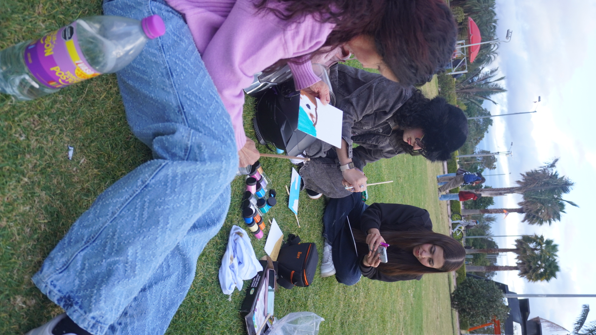
Migrar dentro de Colombia significa dejar atrás lugares, personas y rutinas para comenzar un nuevo proceso en otro territorio.
Esta plataforma busca acompañar a mujeres migrantes internas a través de historias, conversaciones, información y recursos que les permitan sentirse escuchadas.
Escucha experiencias reales de mujeres que han comenzado una nueva etapa en Bogotá.
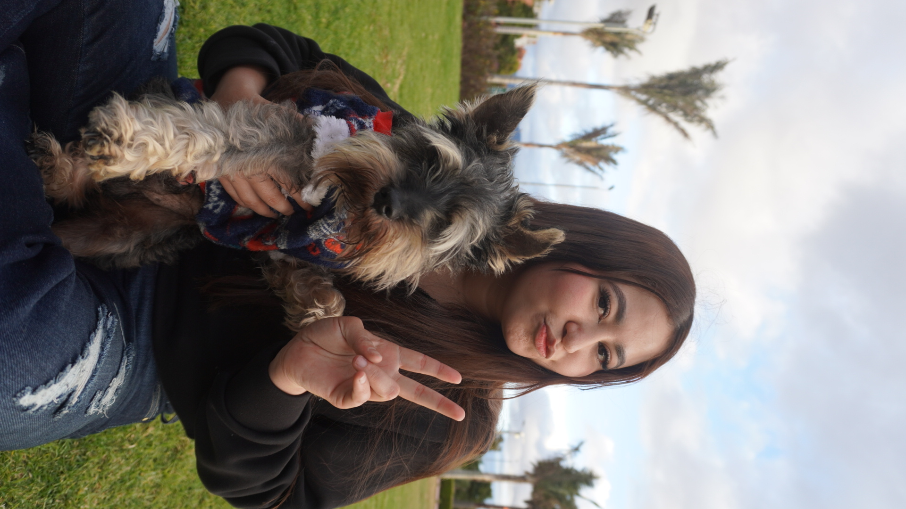
Una conversación profunda sobre comenzar en un lugar nuevo, en un lugar desconocido.
🎧 Episodio 01 · Escucha la historia
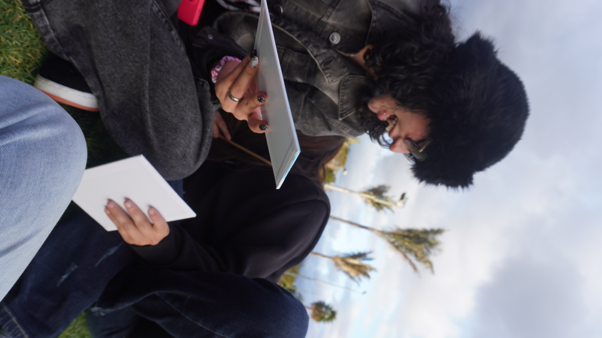
Sobre comunidad, amistad y la importancia vital de sentirse acompañada al llegar a un entorno urbano grande.
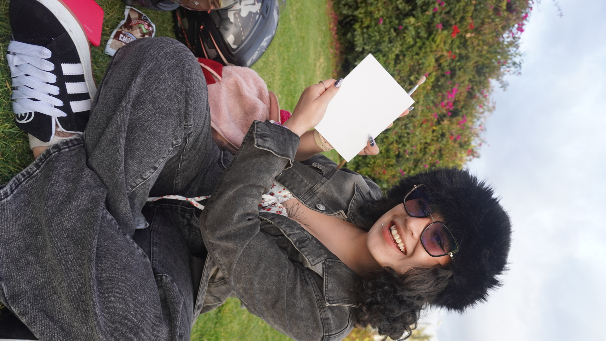
Una historia inspiradora sobre cambios de vida, superación de retos y nuevas posibilidades laborales.
Por seguridad y para cuidar este espacio, crea un usuario antes de escribir o publicar tus comentarios.
Usa un nombre o apodo con el que te sientas cómoda en la comunidad.
Cargando conversaciones...
Encuentras información para que estemos un poco más cerca de tí.
Un espacio personal para escribir tus experiencias, expresar tus emociones y reflexionar sobre tu proceso de migración, con unas preguntas que te ayudaran a fluir.
Abrir guía (PDF) ↗ Descargar guíaSi en algún momento te sientes ansiosa o sientes que no puedes recuperar la calma, encontrarás una guía práctica con herramientas y ejercicios que te ayudarán a tranquilizarte y afrontar diferentes situaciones.
Abrir guía (PDF) ↗ Descargar guíaUna actividad breve y práctica para seguir la guía, mantener tu mente concentrada y conectar con el momento presente.
Abrir guía (PDF) ↗ Descargar guíaLíneas de atención inmediata en Bogotá, rutas de protección y asistencia psicológica prioritaria 24/7.
Abrir guía (PDF) ↗ Descargar guíaCada encuentro fue una oportunidad para compartir, crear, expresarnos y construir vínculos. Aquí reunimos algunos momentos de las actividades que realizamos junto a las mujeres participantes.
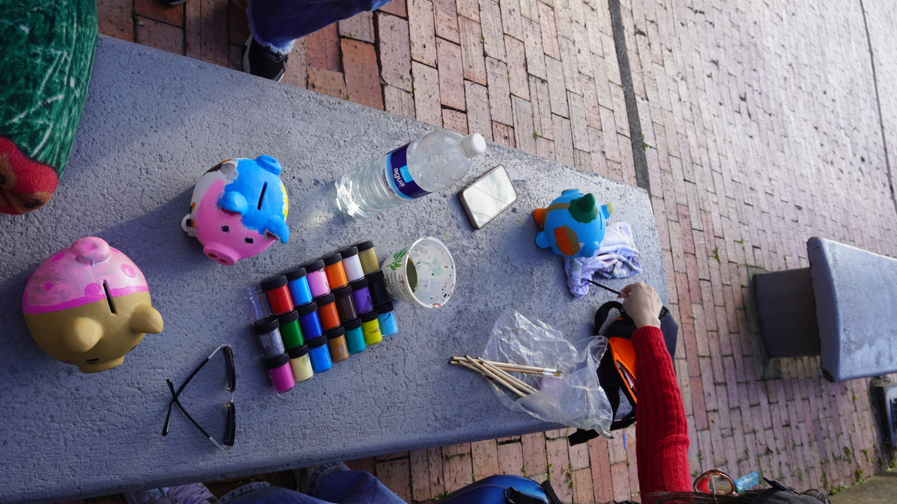
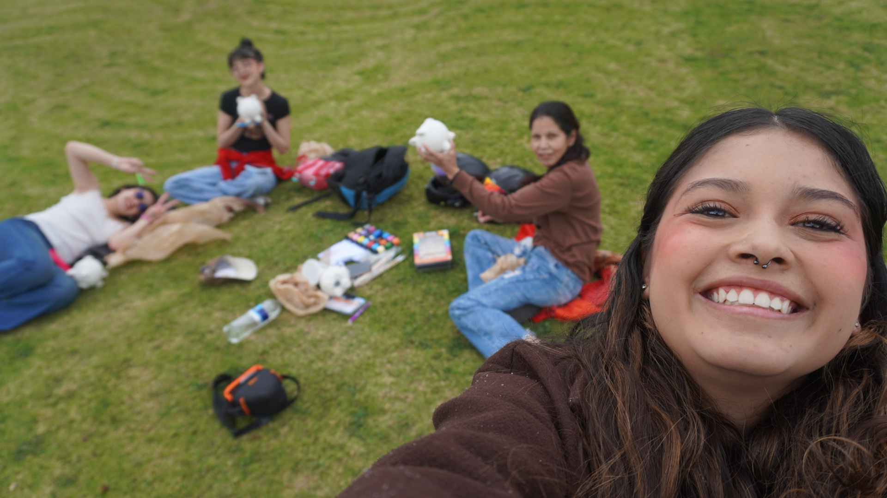
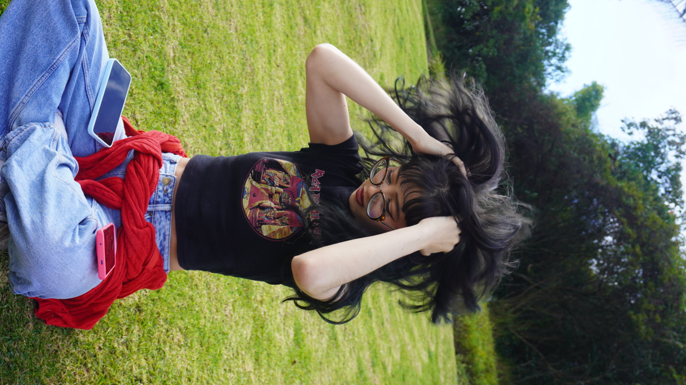
Nos encontramos en un parque para compartir una experiencia artística al aire libre. A través de la pintura de cuadros, cada participante tuvo la oportunidad de expresarse para ellas como veian la migración, explorar su creatividad y disfrutar de un espacio diferente.
Un momento de expresión, tranquilidad y conexión con otras mujeres a través de la pintura y muchas risas.
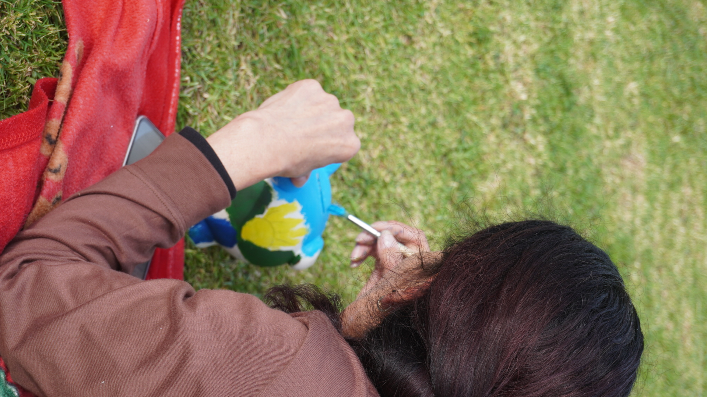
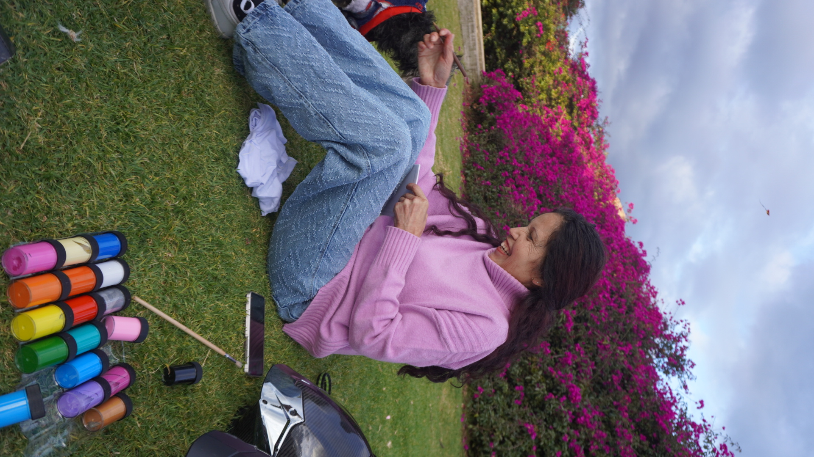
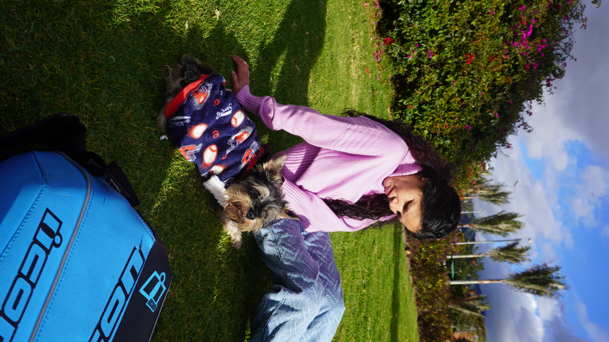
En este encuentro realizamos una actividad de pintura de alcancías en forma de cerdito. Cada mujer pudo decorar su propia alcancía, elegir colores y plasmar su personalidad mediante diferentes diseños.
Un espacio para compartir habilidades, estimular la imaginación y crear algo propio que cada participante pueda llevarse. Una oportunidad para desarrollar nuevas capacidades, fomentar el ahorro y construir herramientas que contribuyan a un mejor futuro.
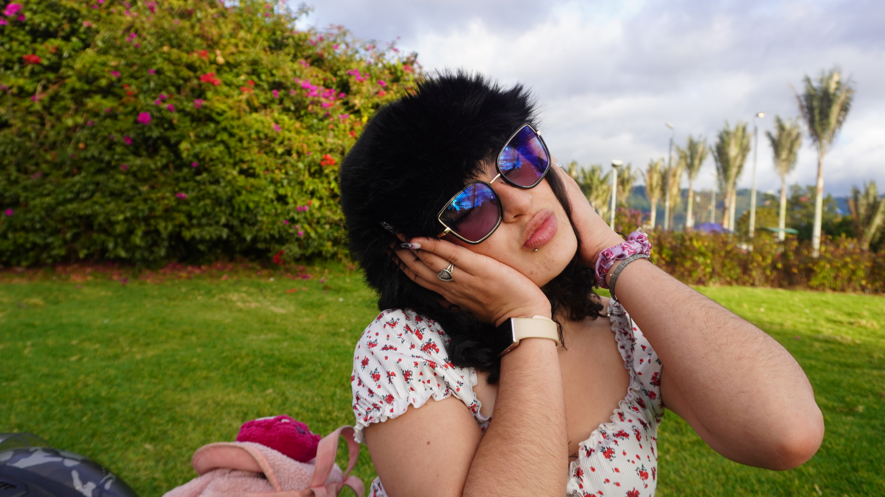
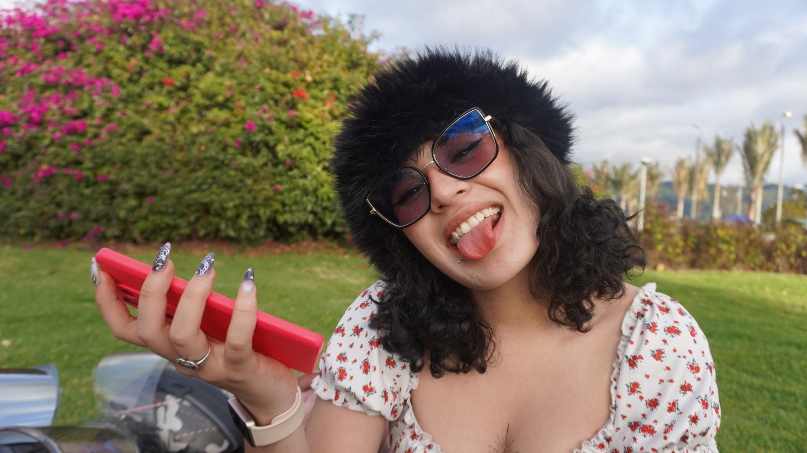
Creamos un espacio de diversión a través de un juego para compartir, participar y disfrutar colectivamente. La actividad permitió salir de la rutina y generar momentos de alegría y cercanía entre las participantes.
La importancia del juego como herramienta para fortalecer la confianza, la participación y los vínculos comunitarios.
Más que actividades, fueron oportunidades para encontrarnos, compartir experiencias y recordar que construir comunidad también significa crear, jugar, reír y disfrutar juntas.